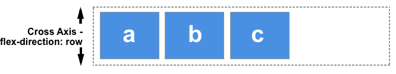

Основні поняття Flexbox
CSS модуль розкладки Flexible Box, зазвичай званий флексбокс або flexbox, або просто flex (флекс), був розроблений як модель одновимірного-спрямованого макета і як один із методів розподілу простору між елементами в інтерфейсі, з потужними можливостями вирівнювання. У цій статті дається короткий опис основних функцій flexbox, які ми розглянемо більш детально в інших посібниках.
Коли ми описуємо flexbox як одновимірно-спрямований, ми маємо на увазі, що flexbox має справу з макетом в одній площині за раз - або у вигляді рядка, або у вигляді стовпця. Як альтернативу можна згадати двовимірну модель CSS Grid Layout, яка керує і стовпчиками, і рядками одночасно.
Флексбокс: дві осі
Під час роботи з flexbox потрібно мислити з точки зору двох осей - головної осі та побічної осі. Головна вісь визначається властивістю flex-direction, а побічна вісь проходить перпендикулярно їй. Усе, що ми робимо з flexbox, відноситься до цих осей, тому варто з самого початку зрозуміти, як вони працюють.
Головна вісь
Головна вісь визначається властивістю flex-direction, яка може набувати одного з таких значень:
- row
- row-reverse
- column
- column-reverse
Якщо ви виберете row або row-reverse, ваша головна вісь буде проходити в горизонтальному напрямку (inline direction).

Якщо ви виберете column або column-reverse, ваша головна вісь буде проходити у вертикальному напрямку (block direction).

Побічна вісь
Побічна вісь проходить перпендикулярно до головної осі, тому, якщо властивість flex-direction (головна вісь) задано як row або row-reverse, бічна вісь буде проходити у вертикальному напрямку.
Якщо властивість flex-direction задано як column або column-reverse, побічна вісь буде проходити в горизонтальному напрямку.

Розуміння того, з якою віссю ви працюєте (головна чи побічна) дуже важливе для подальшого вивчення Flexbox.
Початок і кінець рядка
Важливо розуміти, що flexbox не робить жодних припущень про режим написання документа. Раніше CSS був сильно орієнтований на горизонтальний режим і режим письма зліва направо. Сучасні методи верстки охоплюють повний діапазон режимів письма, і тому ми більше не припускаємо, що рядок тексту розпочинатиметься у верхньому лівому кутку документа і проходитиме в напрямку до правого боку, а нові рядки з'являтимуться один під одним.
Ви можете прочитати більше про взаємозв'язок між flexbox і специфікацією Writing Modes у наступній статті, однак наступний опис має допомогти пояснити, чому ми не говоримо про лівий, правий, верхній і нижній напрямки наших flex-елементів.
Якщо властивості flex-direction задано значення row і ви працюєте з англійською мовою, то початок головної осі буде зліва, а кінець головної осі - справа.

Якби ви працюєте з арабською мовою, то початок головної осі буде праворуч, а кінець головної осі - ліворуч.

В обох випадках початок побічної осі знаходиться вгорі flex контейнера, а кінець - внизу, оскільки обидві мови мають режим горизонтального запису.
Через деякий час стає природним думати про початок і кінець осі, а не про лівий і правий краї. Це буде корисно для вас під час роботи з іншими методами, такими як CSS Grid Layout, які дотримуються тих самих шаблонів.
Flex контейнер
Область документа, що використовує flexbox, називається flex контейнером. Щоб створити flex-контейнер, ми задаємо значення flex або inline-flex для властивості display контейнера. Щойно ми робимо це, прямі нащадки цього контейнера стають flex-елементами. Як і для всіх властивостей у CSS, деякі початкові значення вже визначені, тому при створенні flex-контейнера всі flex-елементи, що містяться в ньому, поводитимуться так.
- Елементи відображаються в ряд (властивість flex-direction за замовчуванням має значення row).
- Позиціонування елементів починається від початку головної осі.
- Елементи не розтягуються по основній осі, але можуть стискатися.
- Елементи будуть розтягуватися, щоб заповнити розмір побічної осі.
- Властивості flex-basis задано значення auto.
- Властивості flex-wrap задано значення nowrap.
Результатом цього є те, що всі ваші елементи будуть збудовані в ряд, використовуючи розмір вмісту як їхній розмір на головній осі. Якщо в контейнері більше елементів, ніж можна вмістити, вони не будуть обгорнуті і контейнер буде переповнений. Якщо деякі елементи вищі за інші, всі елементи будуть витягнуті вздовж побічної осі, щоб заповнити вісь у повний розмір.
Зміна flex-direction
Додавання властивості flex-direction до контейнера дає нам змогу змінювати напрямок, у якому відображаються наші елементи flex. Встановлення flex-direction: row-reverse збереже порядок відображення елементів уздовж рядка, однак початок і кінець рядка поміняються місцями.
Якщо змінити значення властивості flex-direction на column, головна вісь зміниться, і наші елементи відображатимуться в стовпчик. У разі встановлення параметра column-reverse, початок і кінець стовпця поміняються місцями.
Багаторядковий флекс-контейнер з flex-wrap
Незважаючи на те, що флекс-бокс - це односпрямована модель, є можливість загорнути наші флекс-елементи в кілька рядків. При цьому ви повинні розглядати кожен рядок як новий флекс-контейнер. Розподіл простору відбуватиметься на цій конкретній лінії, не прив'язуючись до сусідніх ліній.
Щоб увімкнути таку поведінку, додайте параметр flex-wrap зі значенням wrap. Тепер, щойно ваші елементи будуть занадто великими для того, щоб вміщатися в один рядок, вони будуть переноситися на нові рядки. Живий приклад нижче містить широкі елементи, у яких загальна ширина більша, ніж розмір контейнера. Оскільки параметр flex-wrap встановлений у значення wrap, елементи переносяться. Якщо ви встановите значення nowrap, тобто в початкове значення, то елементи вужмуться так, щоб усі елементи помістилися в одному рядку, бо в них установлено значення, яке дає змогу їм стискатися за потреби. Якщо їм заборонити стискатися, або якщо вони не зможуть стиснутися досить сильно, то при встановленому значенні nowrap відбуватиметься переповнення контейнера.